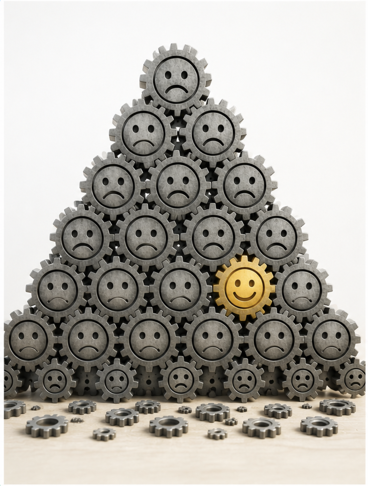
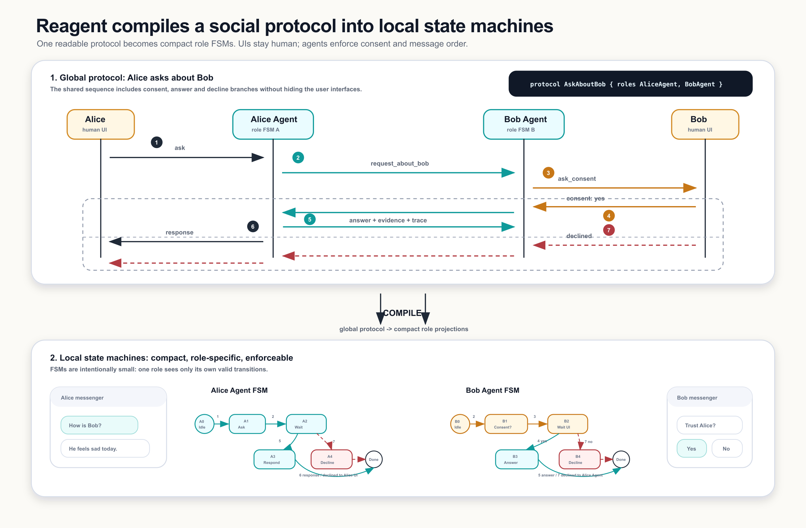
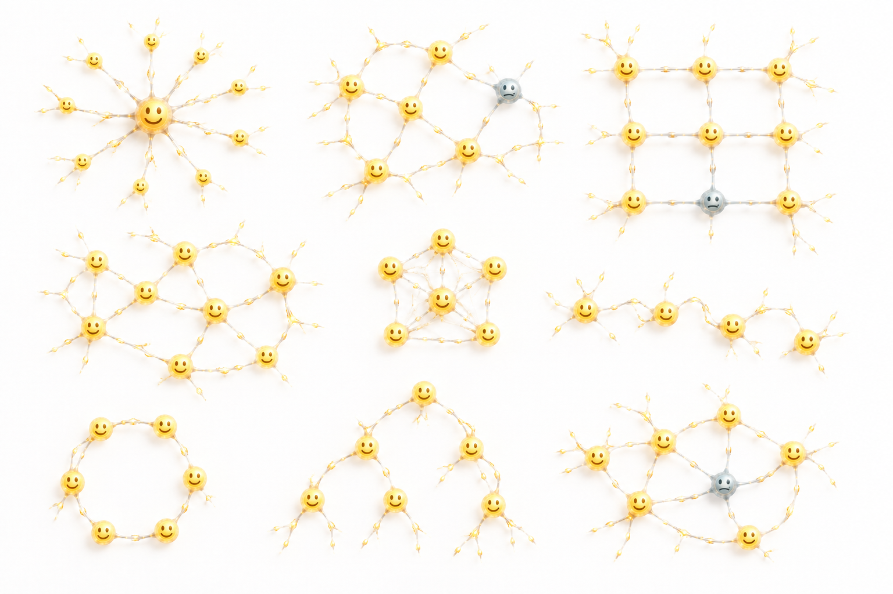
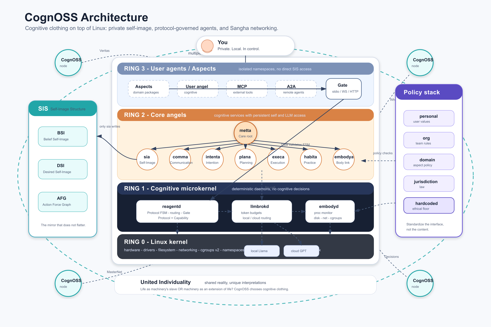

Machinery over life
Optimization systems turn people into cogs. The more they know about us, the easier it becomes to steer us.
Next Gen OS | Next Gen OSS
Yours. Private. Care. CognOSS is cognitive clothing: a personal AI layer that extends your rationality instead of replacing it.
A local self-image, protocol-governed agents, and an open path from individual sovereignty to trusted collective intelligence.
The question
Life as a slave of machinery, or machinery as the extension of life?

Optimization systems turn people into cogs. The more they know about us, the easier it becomes to steer us.
AI becomes cognitive clothing: close to the body, owned by the wearer, serving awareness, agency, and care.
Your self-image must belong to you before it can safely connect to others.
Cognitive clothing
Whatever we call it - digital twin, cognitive twin, second brain, or user model - it will know almost everything about you. If somebody else owns it, they own a new level of leverage over your mind.
Keep the self-image locally on devices you trust. CognOSS is not a rented assistant; it is an extension you wear.
Constant AI use can quietly steal judgment. CognOSS is designed to help you stay conscious of yourself and your reasons.
Use automation, planning, execution, and skills - while the system keeps the user model, policies, and agency under your control.
Once the individual is protected, connection can become coordination without surrender.
Protocol networks
Imagine a network of CognOSS instances reflecting social reality: autonomous people, trusted protocols, and shared clarity without a central platform owning the relationship.

How do we trust agents communicating with each other without a central platform governance? Reagent defines the network chemistry: a readable protocol compiles into role-specific state machines.
protocol AskAboutBob {
participants:
alice initiator,
aliceAgent single static,
bobAgent single static,
bob single auto
trigger on invoke with AskAboutBob {
resolve bobAgent =
all | filter(name == "Bob Agent")
}
alice --> aliceAgent: AskAboutBob
aliceAgent --> bobAgent: RequestAboutBob
bobAgent --> bob: AskConsent
alt at bobAgent
(bob --> bobAgent: ConsentGranted) {
bobAgent --> aliceAgent: BobStatusReport
aliceAgent --> alice: BobStatusResponse
} else
(bob --> bobAgent: ConsentDeclined) {
bobAgent --> aliceAgent: RequestDeclined
aliceAgent --> alice: RequestDeclined
}
}Trusted networks driven by protocols.
Protocol examples
Share exactly the data needed for communication, then remove it when it is no longer needed.
Share observations between CognOSS instances, detect fakes, and make reality clearer.
Anonymous, hard-to-manipulate social sensing for trustworthy sociology.
Voting and coordination protocols grounded in a clearer picture of reality.
Find better matches and meaningful connections, not just retention and monetization.

Build your networks
A CognOSS network can be a pair, a circle, a mesh, a temporary working group, or a public protocol. The important part is that coordination is explicit and inspectable.
Architecture
CognOSS does not modify the Linux kernel. It runs as userspace processes: a deterministic microkernel, cognitive angels, isolated aspects, and a self-image graph guarded by protocol capabilities.

BSI, DSI, and AFG represent the current self, desired self, and tensions that become work.
If a transition is not in the protocol state machine, the agent cannot perform it.
Domain packages add protocols, agents, skills, policies, and isolated software without polluting the host.
Roadmap
Build the first usable cognitive clothing: local self-image, core angels, and protocol runtime.
Bring together systems engineers, AI builders, designers, and people who care about sovereignty.
Turn the project into a durable open-source process with public protocols and real contributors.
Join us
We are looking for people who want personal AI to be open, local, private, protocol-governed, and oriented toward care.